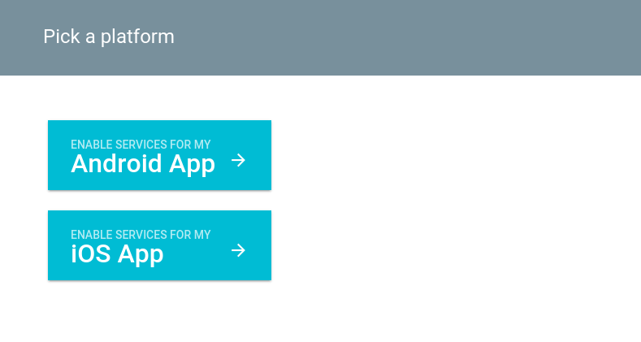
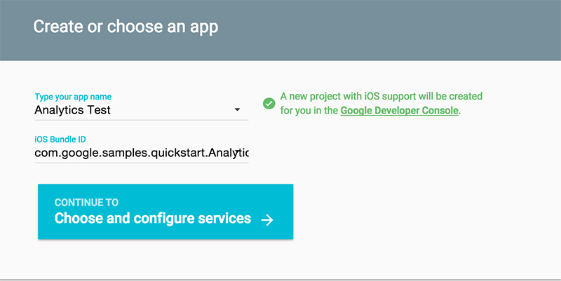
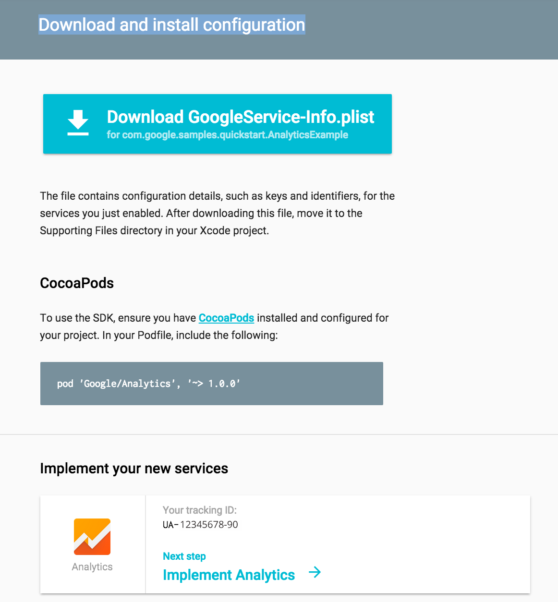
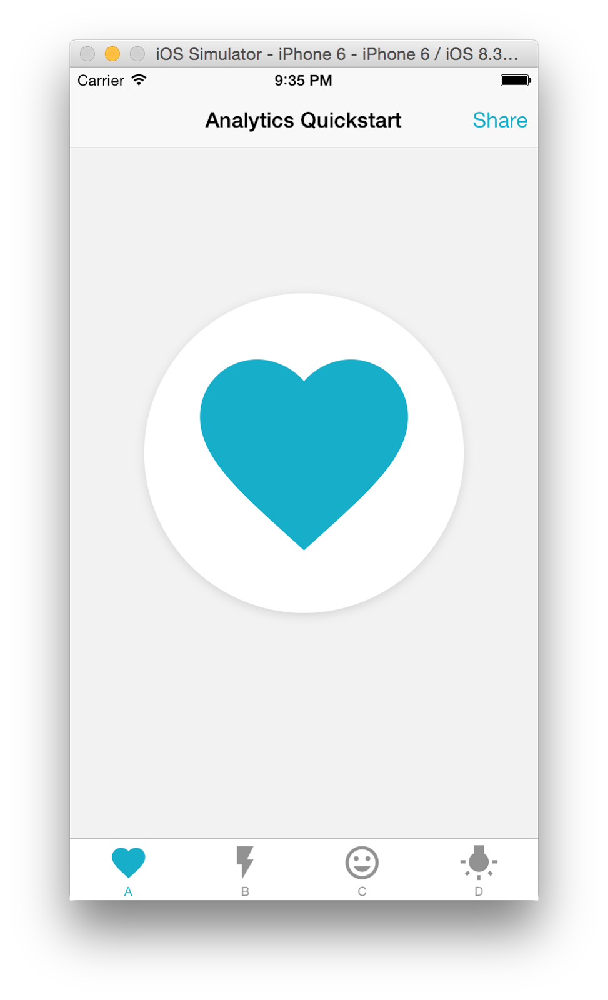
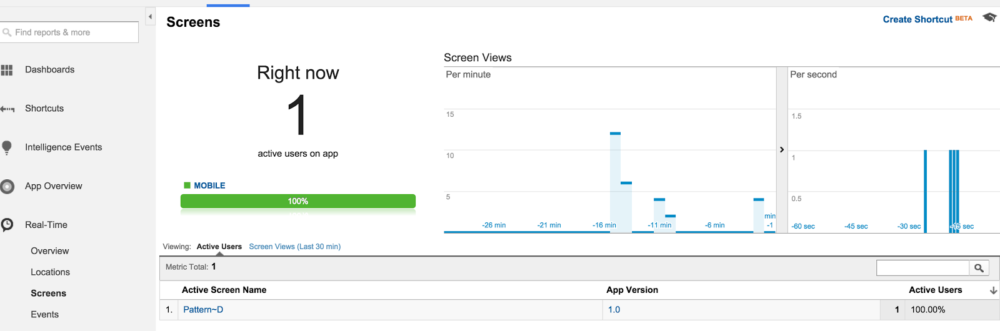

Google Analytics is a great tool for understanding how people are using your app. You can get data in real-time about what screens they are using, and set-up custom events to find out what they’re doing.
In this codelab, you’ll learn how to add Google Analytics to an existing iOS Application. You’ll have a working app which you can track data from at analytics.google.com.
What you’ll learn
- Setup and configure a Google Analytics project
- Incorporate it into a sample iOS application
- Track screen usage in real-time
What you’ll need
- Xcode
- The sample code
- CocoaPods to simplify dependency management
Log in to your project
Click here to configure your project. Log in to your project if necessary. Then select "Pick a platform".
Configure your project
and select iOS.

Create a new project, give it a name and use this bundle ID:
com.google.samples.quickstart.AnalyticsExample

Press Choose and configure services. Then click to accept the TOS.

Select Analytics. Then select your Google Analytics Account, or create one if you don’t have one. And then select your Analytics Property. If you don’t have one, this will automatically create it for you. Finally, push Enable Analytics Service and then press Continue to Generate Configuration Files.

On this last page, press Download GoogleService-Info.plist to get the required plist file.
Note that the screen gives you instructions for setting up a Podfile. You do not need to create a Podfile as one already exists in the sample project you’re about to open. If you're trying this code lab at Google I/O, CocoaPods is pre-installed for you., Otherwise, if you don't have CocoaPods already, follow the installation instructions.
The screen also gives you an Analytics tracking ID. You won’t need it for this project.
Code Location
Check out the code from the github repository.
Open up a Terminal and run
CocoaPods
This will fetch the CocoaPods dependencies, and open the app in Xcode.
In Finder, navigate to where you downloaded the GoogleService-Info.plist file. Drag that into the Supporting Files directory of your project on Xcode. Make sure 'Copy files if needed' is checked. Click OK. Then click Run and run it in the iOS Simulator. You’ll get this quickstart app in the simulator. At the bottom of the default view there’s four tabs, A-D. Each one changes the icon displayed. Click on one and check out the new image.

At the moment, switching tabs switches the screen, but does nothing else.
In this step you’ll add in code to three different files, AppDelegate.m, ViewController.m, and PatternTabBarController.m and start sending information to Google Analytics.
AppDelegate.m
In AppDelegate.m you’ll create a shared context by adding in the tracker information that you brought in by adding in the GoogleServices-Info.plist file.
First, add these imports:
In application:didFinishLaunchingWithOptions: add in the following code:
ViewController.m
In ViewController.m take these steps to send your screen information to Analytics, every time a new tab is displayed:
- Import
Google/Analytics.h - In
viewWillAppear:animated:create a string based on the tab nameNSString *name = [NSString stringWithFormat:@"Pattern~%@", self.title]; - Get the default
GAITracker, and give it the value you set in the previous stepid<GAITracker> tracker = [[GAI sharedInstance] defaultTracker]; id<GAITracker> tracker = [[GAI sharedInstance] defaultTracker];
[tracker set:kGAIScreenName value:name]; - Send that information to your Analytics account
[tracker send:[[GAIDictionaryBuilder createScreenView] build]];
This will send info to Google Analytics when the view is created, and Analytics will track the screen that is in use.
PatternTabBarController.m
In PatternTabBarController.m, take these steps to send a custom event when the Share button is pressed:
- Import
Google/Analytics.h - In
didTapShare:sender:, get the defaultGAITrackerid<GAITracker> tracker = [[GAI sharedInstance] defaultTracker]; - Create a custom event, and share it with the tracker:
- You can optionally implement the Share action, or just display an alert when the button is pressed, as so:
Run the app
Finally, run the app again and start pressing tabs. That information will immediately get sent to Google Analytics.
Go to analytics.google.com and select Access Google Analytics in the upper-right corner. This will take you to your Google Analytics account. Drill down into your account and the property that matches the Analytics ID you added to the project. Drill down to Real-Time data and you can see data usage for your app as you click on buttons. Check out the Screens and Events tabs to see info about your app.

Congratulations! You’re done!